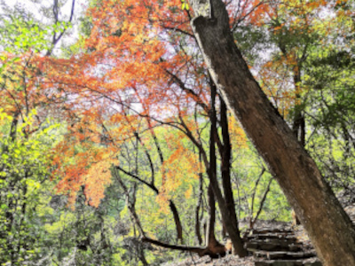
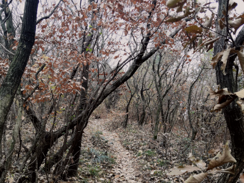
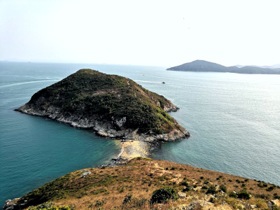
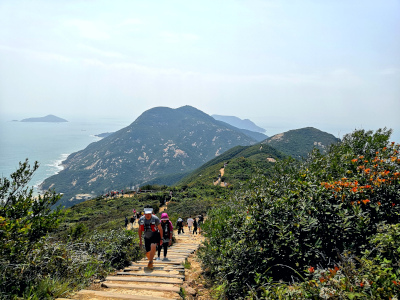
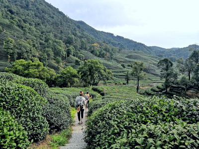

Hiking made easy
Everything you need to design great adventures the simple way

Perfect day-hike around Shanghai for an easy nature boost
Wuxi, Huishan
11 Dec 2022
Full immersion in nature for a day-hike outside of Shanghai
Wuxi, Junzhang Ancient Road
02 Jan 2023
Short but adventurous hike in Hong Kong
Hong Kong, Mount Johnston
24 Feb 2023
Classic and easy hike in Hong Kong
Hong Kong, Dragon’s Back
25 Feb 2023
Fantastic day-hike at the discovery of Longjing tea fields
Hangzhou, Longjing
11 Mar 2023

About Me
Hello! My name is Mylene. I am an outdoor lover, always planning my next adventure, either on foot or by bike. I enjoy the simple things in life and feel the happiest when fully immersed in nature.
After more than 8 years in China, I have finally mastered the art of designing beautiful trips outside of Shanghai the easy way. Come and join me!